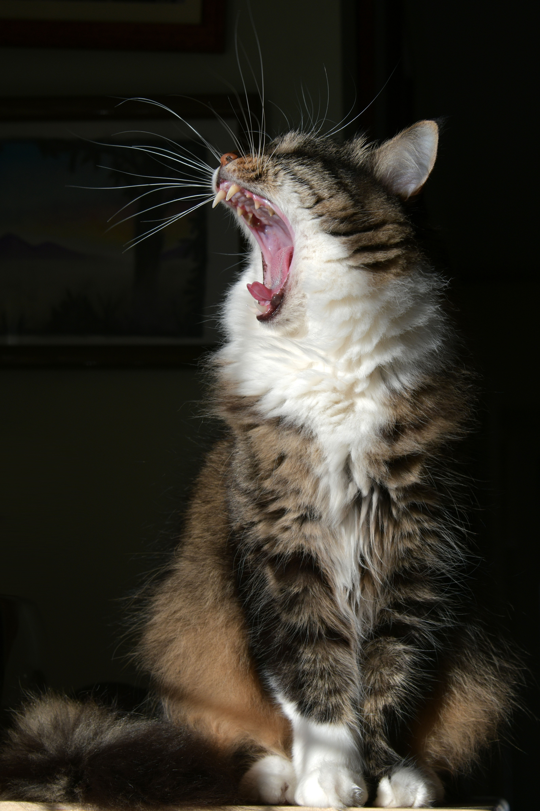
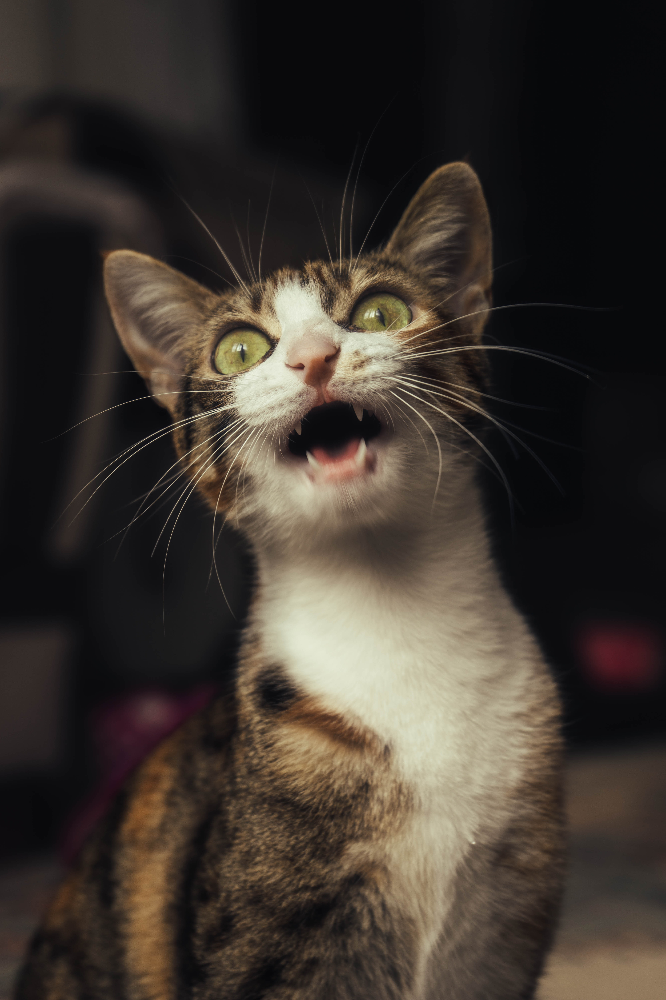

고양이의 경우 암컷보다는 수컷이 더 자주 싸운다. 길고양이의 경우에는 한마리의 암컷을 두고 두마리의 수컷이 싸우는 경우가 많다. 이런경우 대개는 더 무거운 고양이가 승리하기 마련이다. 집고양이의 또 다른 싸움의 원인으로는 좁은 집에서 같이 살아서 자신의 영역을 만들기가 어려울 때이다. 암컷 고양이 또한 영역을 지키거나 새끼를 지키기 위해 싸운다. 중성화 수술은 이러한 싸움을 줄이거나 없앤다. 아마도 그 원인은 성호르몬에 있는 것으로 보인다 수명은 집고양이 기준으로 평균 15~20년 정도이다. 일반적인 소형견과 비슷하거나 더 많은 수준. 유전병이 있는 몇몇의 고양이들도 집사의 꾸준한 관리가 있으면 오래오래 살 수 있다. 이와 대조되게, 길거리에서 머무르는 환경과 영양이 나쁜 길고양이들의 수명은 고작 평균 2~3년이다. 천적은 없다시피한 수준이지만, 질병이나 사고로 어린 나이에 많이 죽기 때문이다. 손에 꼽히는 주 사망 요인은 교통사고, 허피스나 어린 고양이에게 치명적인 (허피스나 복막염, 범백 등의) 전염병, 모기에 의해 감염되는 심장사상충, 오염된 음식물 쓰레기를 먹고 걸리는 식중독 등이 있다. 그나마 캣맘, 캣대디들의 개입으로 조금 사정이 나아져, 5년 넘게 해를 넘기는 경우도 있다. 길가에서 구하기 힘든 물의 제공이랑 고양이의 수명을 늘려주는 TNR 등으로 고양이가 훨씬 더 오래 살 수 있기 때문이다. 그러나 이런 행동으로 인해 역으로 근처 주민들에게 피해를 주게 되어 논란이 많다.


